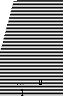
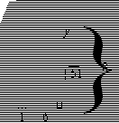

A 10-foot ladder is leaning against a vertical wall. The top of the ladder touches the wall at a point 8 feet above the ground. The base of the ladder slips 1 foot away from the wall.
Column A
1
Column B
The distance the top of the ladder slides down the wall
Applying the Pythagorean Theorem to the original triangle yields x2 + 82 = 102
Solving this equation for x yields x = 6
Hence, the base of the final triangle is
1 + 6 = 7
Applying the Pythagorean Theorem to the final triangle yields h2 + 72 = 102
Solving this equation for h yields h = √51
Adding this information to the drawing yields

From the drawing,
y = 8 − √51 < 8 − 7 = 1, since √51 ≈ 7.1.
Hence, Column A is larger, and the
answer is A.